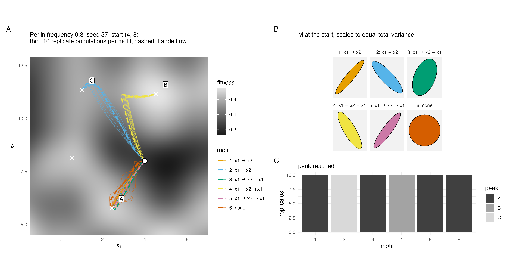
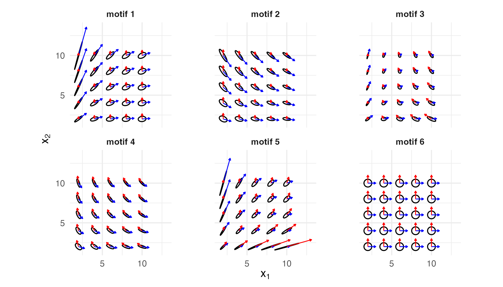
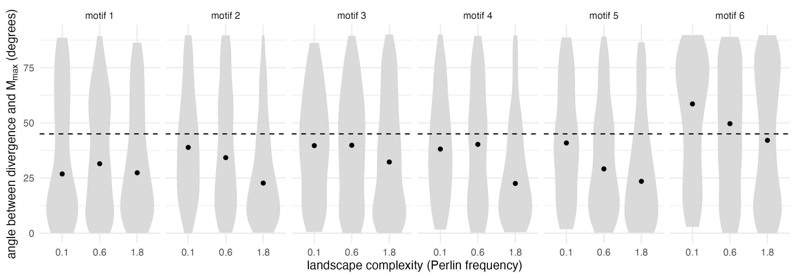
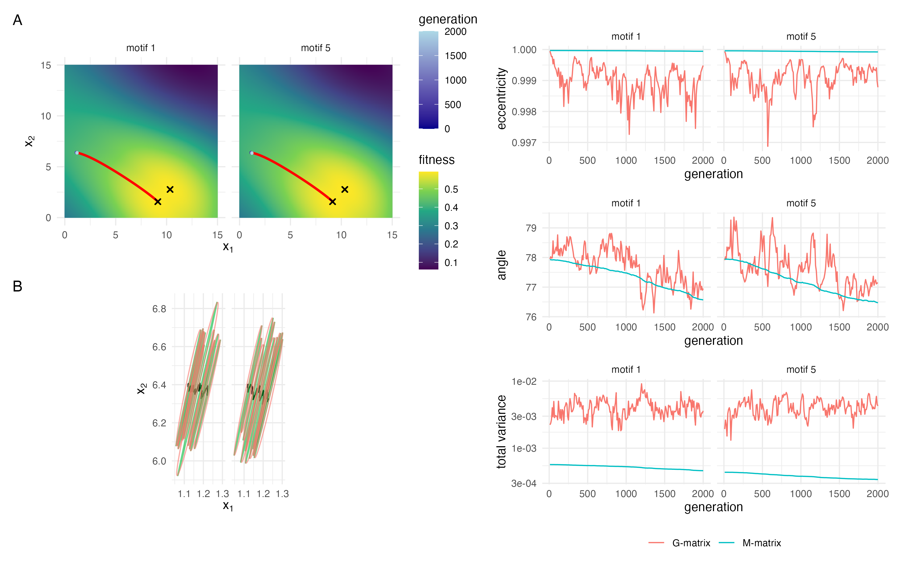
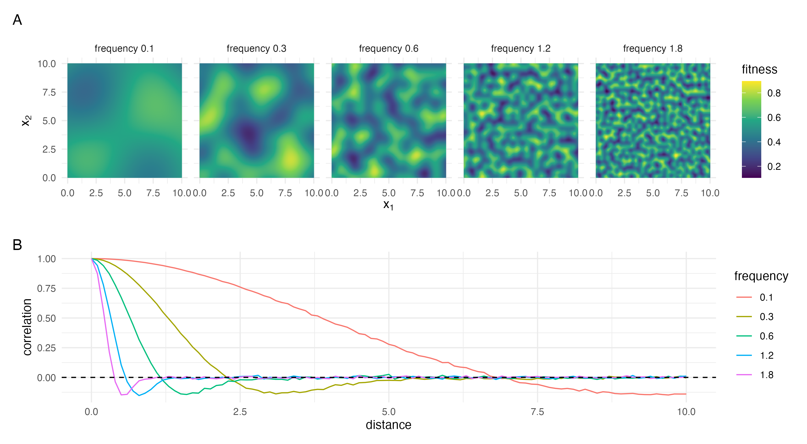

This article walks through the figures of Developmental Bias
Shapes Evolution on Complex Adaptive Landscapes (Netz, Melo &
Milocco) and shows how each is built with grnland. The complete scripts
are in the analysis/
folder of the repository; the code below shows the essential calls.
About the images. The full figure runs take many core-hours (about 200,000 simulations for Fig 3 and 500,000 for Fig 4), so the figures shown here, except the motif example, come from the reduced pipeline check (
QUICK=1: coarse grids and few replicates). They show what each figure contains, not final results.
All scripts share the simulation settings of the original analysis code:
library(grnland)
PAPER <- list(N = 1000, generations = 10000, mu = 0.01, sigma = 0.05,
ploidy = 1, reproduction = "clonal")The six motifs
Every figure compares the same six two-gene networks. Each gene has its own production rate \(\alpha_i\) as the evolving locus; the motifs differ only in how the two genes regulate each other.
| Motif | Regulation | paper_motif() |
|---|---|---|
| 1 | \(x_1 \to x_2\) | paper_motif(1) |
| 2 | \(x_1 \dashv x_2\) | paper_motif(2) |
| 3 | \(x_1 \to x_2\), \(x_2 \dashv x_1\) | paper_motif(3) |
| 4 | mutual repression | paper_motif(4) |
| 5 | mutual activation | paper_motif(5) |
| 6 | no regulation | paper_motif(6) |
Motifs reach different peaks
Script: analysis/motif_example.R. Before the
paper figures, an example that shows the main idea in one picture. All
six motifs start from the same phenotype on the same rugged landscape.
Because their M-matrices point in different directions (panel B), they
climb to different peaks (panels A and C), and every one of 10 replicate
populations per motif ends on the peak predicted by the deterministic
Lande equation \(\dot{\bar z} = M\nabla
W\).

Motifs whose M has positive covariance between the traits (1, 3, 5) go to peak C, those with negative covariance (2, 4) to peak A, and the unregulated motif 6, with a round M, to peak B.
The example was found by a screen: for 120 Perlin landscapes and a grid of starting points, integrate the Lande flow of each motif and keep starts where the motifs reach at least three peaks, robustly to small shifts of the start; then check the best candidates with stochastic simulations.
land <- landscape_perlin(frequency = 0.4, seed = 6)
peaks <- find_peaks(land, 0, 20, res = 500)
runs <- lapply(1:6, function(k)
simulate_population(paper_motif(k), landscape_grid(land, 0, 20), start = c(4, 8),
N = 1000, generations = 10000, mu = 0.01, sigma = 0.05,
stop = stop_at_peaks(peaks), record_every = 20, seed = k))
sapply(runs, `[[`, "outcome") # index of the peak each motif reachedAnother landscape from the same screen, where four motifs share one peak and motifs 2 and 4 each reach a different one:

Fig 1: linear genotype-phenotype maps
Script: analysis/fig1_linear_maps.R. With a
linear map \(x = B\alpha\) the M-matrix
is constant, \(M = \mu\sigma^2
BB^\top\). Three maps (no covariance, positive, negative) evolve
on a single peak (A) and on a two-peak landscape (B), where outcomes
from a grid of starts are classified by an SVM (white borders) and
compared with the separatrix of the Lande equation (dashed).
B <- list(B1 = diag(2),
B2 = matrix(c(5, 4, 4, 5) / 3, 2),
B3 = matrix(c(5, -4, -4, 5) / 3, 2))
models <- lapply(B, gp_linear)
land <- landscape_perlin(frequency = 0.1, seed = 324)
lande <- lande_separatrices(models$B2, land, lower = -5, upper = 15)
Fig 2: M-matrices across phenotype space
Script: analysis/fig2_m_matrices.R. M-matrices
of each motif over a grid of phenotypes, with the sensitivity vectors
\(\partial x/\partial\alpha_i\).
Regulation makes M vary in size, shape and orientation across phenotype
space.
grid <- expand.grid(x1 = seq(1, 10, by = 1.5), x2 = seq(1, 10, by = 1.5))
Ms <- lapply(seq_len(nrow(grid)), function(i)
m_matrix(paper_motif(3), phenotype = unlist(grid[i, ])))
S <- sensitivity(paper_motif(3), genotype_at(paper_motif(3), c(4, 4)))
Fig 3, S1, S2: basins of attraction
Script: analysis/fig3_basins.R. Populations
start from a 41 × 41 grid of phenotypes (10 replicates each) on a simple
and a complex Perlin landscape; lines join each start to the peak
reached. SVM borders between basins differ between motifs (Fig 3
compares motifs 1 and 2 with the unregulated motif 6 in red), and the
Lande-equation separatrices predict them (Figs S1, S2).
simple <- landscape_perlin(frequency = 0.1, seed = 1234)
land <- landscape_grid(simple, 0, 15)
peaks <- find_peaks(simple, 0, 15, res = 500)
sim <- simulate_population(paper_motif(1), land, start = c(4, 6),
N = 1000, generations = 10000, mu = 0.01, sigma = 0.05,
stop = stop_at_peaks(peaks), seed = 1)
sim$outcome

Fig 4 and 5: landscape complexity
Script: analysis/fig4_fig5_complexity.R. Ten
Perlin landscapes per frequency (0.1 to 1.8), mutational sd 0.2. Fig 4A
shows how often each motif reaches a different peak than the unregulated
motif 6; Fig 4B the agreement between all pairs of motifs.

Fig 5 measures the angle between the direction of divergence from motif 6 and the leading eigenvector of M at the peak: angles below 45° mean divergence follows the direction of most mutational variance.

Fig 6: trajectories of G and M
Script: analysis/fig6_trajectories.R. Motifs 1
and 5 start from a phenotype where their M-matrices are nearly
identical, on a landscape of twin peaks. The figure tracks the mean
phenotype, the G-matrix and the M-matrix (record_m = TRUE)
through time.
layer <- function(offset) landscape_perlin(frequency = 0.05, seed = 76, offset = offset,
transform = function(z) ((z + 1) / 2)^2)
twin <- landscape_smoothmax(layer(c(0, 1)), layer(c(-1, 0)), beta = 100)
sim <- simulate_population(paper_motif(5), landscape_grid(twin, 0, 15),
start = c(1.12, 6.4), N = 10000, generations = 10000,
record_m = TRUE, record_every = 10, seed = 1)
With replicates, the outcome from this start is not consistent: the
twin peaks have almost equal heights and are joined by a nearly flat
ridge, so which peak is reached depends largely on drift.
analysis/fig6_search.R screens for better starting points;
the motif example above is a robust alternative for showing that motifs
diverge.
Fig S3: Perlin landscapes
Script: analysis/figS3_perlin.R. Landscapes at
increasing Perlin frequency, and their spatial correlation.

Running the scripts
cd analysis
QUICK=1 OPENBLAS_NUM_THREADS=1 Rscript fig3_basins.R # quick pipeline check
OPENBLAS_NUM_THREADS=1 N_CORES=32 Rscript fig3_basins.RResults are cached in analysis/output/, so a second run
only redraws the figures; set REDO=1 to recompute. See
analysis/README.md for details and run times.